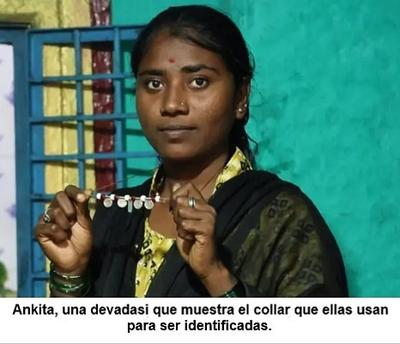

El 4 de noviembre de 2025, el portal de noticias BBC Mundo News, publicó un reportaje dedicado a las «Devadasis, las jóvenes entregadas a los dioses que quedan atrapadas en una vida de explotación sexual»[1]


Dicho reportaje aborda la antigua práctica de mujeres jóvenes entregadas simbólicamente a una deidad, sobre todo a la diosa Yellamma, en templos del sur de la India, particularmente en el estado de Karnataka. Aunque la costumbre está oficialmente prohibida desde 1982, aún se realiza clandestinamente, sobre todo en comunidades rurales empobrecidas. El texto narra la historia de Chandrika (de nombre asumido para proteger su privacidad), una mujer consagrada en su adolescencia y que, años después, fue llevada a un entorno donde sufrió explotación y perdió el control sobre su propia vida. Se muestran también los casos de Ankita y Shilpa, jóvenes presionadas por sus familias a participar en la irracional ceremonia religiosa, por miedo a una supuesta «maldición» divina o por necesidad económica.
El artículo explica que esta práctica se mantiene por la pobreza, la discriminación de castas y las creencias tradicionales de ese país, que dificultan que las mujeres «consagradas» puedan rehacer su vida o acceder a educación y empleo. Muchas de ellas carecen de derechos básicos y viven con un fuerte estigma social. Y aunque las autoridades locales afirman haber reducido drásticamente la cantidad de devadasis, organizaciones civiles aseguran que las ceremonias continúan de forma encubierta. El reportaje concluye destacando los esfuerzos de algunas mujeres y oenegés por romper el ciclo, y evitar que las nuevas generaciones repitan la historia.
Pero, ¿qué son las devadasis? ¿Por qué se conocen también como «esclavas de Dios»? ¿De cuál de los muchos dioses de la India son esclavas? ¿Cuál es el origen de esta tradición? ¿Por qué «las casan» con una diosa y no con un dios? ¿Por qué no pueden liberarse de ese estilo de vida? ¿Cómo es que el gobierno no persigue esta práctica?
Sí, aún en pleno siglo XXI, en la India pervive esta práctica que revela con crudeza el poder destructivo de la superstición religiosa cuando se mezcla con el patriarcado y la pobreza: la oscura tradición de las «devadasis», llamadas «esclavas de Dios». Es irónico —además de trágico— que una creencia que pretende rendir culto a lo divino, haya terminado convirtiéndose en una de las formas más antiguas de esclavitud sexual institucionalizada.
Hace más de mil años, durante las dinastías Chola y Chalukya, las «devadasis» eran mujeres educadas que servían en templos hindúes dedicados a la danza y la música. Se las consideraba esposas simbólicas de una deidad —generalmente de una diosa madre— y gozaban de cierto prestigio social. Pero todo eso era una ilusión frágil, porque su cuerpo nunca les pertenecía a ellas del todo: pertenecía al templo, es decir, a los hombres que lo controlaban.
Con el tiempo, cuando los templos perdieron su poder económico y la colonización británica desmanteló su estructura, las devadasis se quedaron sin sustento. Fue entonces cuando el «servicio a los dioses» derivó en «servicio a los devotos», y la danza sagrada se transformó en prostitución ritualizada. Y la religión no abolió esa explotación; simplemente le cambió el nombre para mantener las apariencias de «santidad».
Pero, ¿por qué son casadas con una diosa y no con un dios? —Resulta que la mayoría de las devadasis modernas son consagradas a la diosa Yellamma, figura venerada por representar la compasión y la maternidad. Sin embargo, la paradoja es grotesca: las jovencitas, a menudo menores de edad, son «casadas» con la diosa, precisamente para que ningún hombre pueda reclamar derechos sobre ellas… salvo, por supuesto, los que paguen por su cuerpo.
Así, la religión provee la coartada perfecta. Las familias pobres, temerosas del castigo divino o del rechazo social, entregan a sus hijas a los templos. Y los sacerdotes bendicen el acto, mientras la sociedad, cómodamente anestesiada por el mito, llama a esto «tradición». Pero en el fondo lo que persiste es la misma estructura patriarcal: mujeres reducidas a instrumentos de placer y sumisión, bajo la máscara de una devoción, de una superstición.
Por otra parte, como sabemos, la población india está dividida tradicionalmente en un sistema de castas que se originó hace milenios, arraigado en antiguas escrituras hindúes, que es un estatus social hereditario. Con el tiempo, este sistema se volvió rígido y se justificó religiosamente, dividiendo a la sociedad en grupos como brahmanes, kshatriyas, vaishyas, shudras, dalit, y otros. Y la colonización británica reforzó el sistema, al usarlo para fines administrativos y para la estrategia de «divide y vencerás».
Pues, resulta que no es casualidad que la mayoría de las devadasis pertenezcan a la casta más baja, la dalit, los llamados «intocables» por ser históricamente considerados «impuros» y ubicados fuera del sistema. Esto les ha impuesto restricciones sociales y religiosas, como excluirlos de los templos, prohibirles usar los mismos caminos y pozos que otras castas, y ser forzados a realizar trabajos considerados inmundos, como limpiar letrinas o deshacerse del ganado muerto.
En el sistema de castas hindú, impuesto con justificaciones religiosas, ser mujer y pobre ya es una condena, pero ser además dalit, es prácticamente no ser humana. A esas mujeres, la religión les robó no sólo la libertad, sino también la posibilidad de cuestionar su propio destino. Se les enseña que desobedecer a los dioses trae desgracia, y así el miedo perpetúa la cadena de la servidumbre.
Aunque el Estado indio prohibió formalmente la práctica de las devadasis hace décadas, la fe —esa prisión invisible— ha resultado más fuerte que la ley. En aldeas de Karnataka o Andhra Pradesh, los rituales continúan furtivamente. Las jovencitas son adornadas, vestidas de novias y entregadas al templo, mientras el pueblo canta alabanzas. Nadie ve esclavitud; todos creen presenciar un acto de fe religiosa.
Y es que las religiones siempre han sabido justificar sus abusos con el lenguaje de lo sagrado. En nombre de los dioses se han cometido genocidios, mutilaciones, y esclavitudes. En la India, la devadasi representa el rostro femenino de esa hipocresía: una mujer declarada «esposa de la diosa» que, paradójicamente, sólo puede sobrevivir sirviendo sexualmente a los hombres.
Cuando una devadasi envejece, la sociedad la abandona. No tiene derecho a casarse, a heredar, ni a participar plenamente en la vida cívica. Y sus hijos —considerados ilegítimos— repiten el ciclo de exclusión. Mientras los templos, que alguna vez se beneficiaron de su arte y su cuerpo, hoy les niegan incluso la existencia.
Esto demuestra que cuando no se somete al escrutinio de la razón, la religión es capaz de transformar el abuso en rito, la violación en ofrenda, y la esclavitud en devoción. Las devadasis son el recordatorio viviente de que la fe, sin ética ni pensamiento crítico, puede ser una herramienta de dominación muy poderosa.
Aquello que comenzó como una expresión artística, se convirtió, bajo el peso de la superstición y la desigualdad, en una industria de la explotación bendecida por los dioses. Y mientras la sociedad siga temiendo más la ira divina que la injusticia humana, el sistema encontrará siempre nuevas formas de perpetuarse.
Las religiones han sido, una y otra vez, hábiles para revestir de espiritualidad lo que en el fondo es simple opresión. Y las devadasis son víctimas de una de las formas más crueles de esa mentira: la que convierte el cuerpo femenino en propiedad de lo sagrado. Y como todo lo sagrado, está diseñado para no poder ser cuestionado.
[Godless Freeman]
[Crédito de imagen: BBC NEWS Mundo]
Comentarios
Comments powered by Disqus